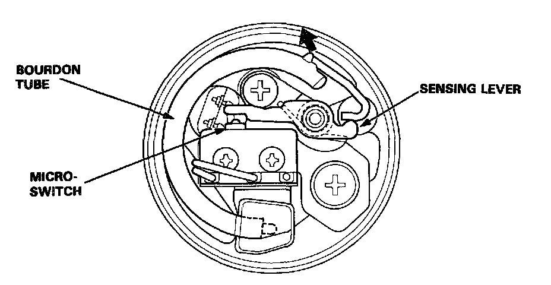

Brake Fluid Pressure Sensor/Switch: Description and Operation

Features/Construction/Operation
Pressure Switch
The pressure switch monitors the pressure accumulation (pressure from the pump) in the accumulator and is turned off when the pressure becomes lower than a prescribed level. When the pressure switch is turned off, the switching signal is sent to the ABS control unit. Upon receiving the signal, the ABS control unit activates the pump motor relay to operate the motor. If the pressure doesn't reach the prescribed value, the ABS indicator light comes on.
Operation
When the pressure in the accumulator rises, the Bourdon tube in the pressure switch deforms outwards. When the free end of the Bourdon tube moves more than the prescribed amount, the micro-switch is activated by the force of the spring attached to the sensing lever. When the pressure in the accumulator decreases due to anti-lock brake system operations, the Bourdon tube moves in the direction opposite to the one described above, and the microswitch is eventually turned off. Upon receiving this signal, the ABS control unit activates the motor relay to operate the motor.